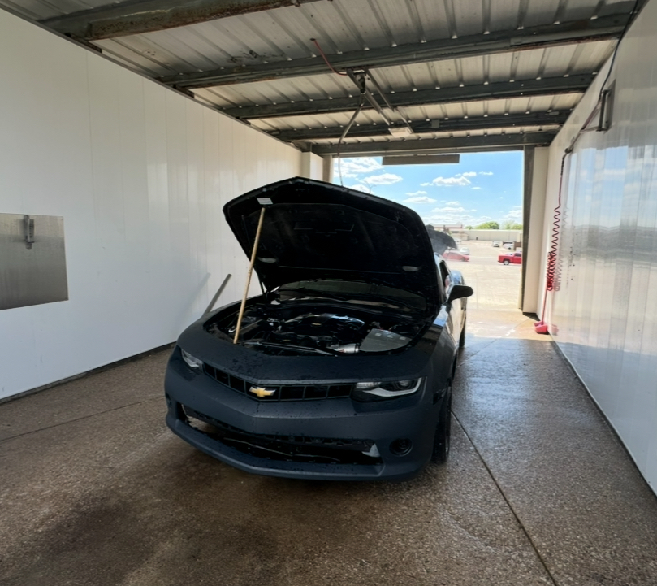

5th Gen Camaro RS
Ever since I got myself involved with cars, I thought to myself "What is car that I really want to own one day?". I looked into just common cars like Accords, Camrys, and so on but I wanted something that spoke 'cargirl'. I started looking into mustangs, challengers and chargers but none of them really grabbed my attention. Until one day, I was driving and saw a Camaro. A girl driving a Camaro and I thought to myself "Omg, I found it, I love it, she's a baddie." And ever since, I really wanted one.
One day on my way back from work, I get a call from a towing service that they were going to drop off a car and I was already use to getting those calls since my dad buys cars off an auction and I help him fix them. So, to me it was "another day, another car".
Little did I know it was going to be my first Camaro as my project car. And little by little I started rebuilding the front and the airbag (since that was the only damage). Soon enough, it was time for the test drive and it felt amazing. Words could not describe the adrendaline that was running throughout my body that day.
Now I want to show you the process, its really dope and I want to share it!!
Timeline:
April 25th, 2025

It arrived and I was literally tearing up because it was the color I wanted and it was perfect in my eyes.


I started looking around to see what kind of repairs it needed and noting what the cost of the repairs would be.


The side and rear side had little to no body damage which was great news because we only have to focus in the front. The inside had a minor airbag issue.
April 28th, 2025


I am making sure that all the parts that arrive fit the car and is the same color (eventhough we are going to paint it later on.
May 5th, 2025
Literally so excited because it was the first time we took it out the parking eventhough it was just for a clean up.
May 31st to present


My Camaro was finally finished and ready to be taken on a spend. I also teared up when I saw it all complete. Best day of my life.